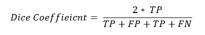

3. 사용 방법
3-4. 성능평가
성능 평가는 인공지능 학습과정에서 매우 중요한 부분입니다.
각종 성능지표를 확인해서 정상적으로 학습이 수행되고 있는가, 그렇지 않다면 어떠한 방향으로 학습이 되고 있는가를 판단할 수 있는 기준을 제공해 주며 학습 성능과 예측 결과를 통해 전체적인 연구 파이프라인의 수정 과정을 거쳐서 연구 목표에 도달할 수 있도록 합니다. 따라서 인공지능의 학습 과정에서, 그리고 학습이 종료된 후 학습된 인공지능의 성능을 평가해서 사용자의 기준에 맞는 성능을 나타냈는지 확인하는 과정을 거쳐야 합니다.
지도학습(Supervised Learning)의 성능 평가 과정은 신경망 알고리즘의 예측 결과와 실제 현실의 정답(Ground Truth)인 Label 데이터를 비교해가며 올바르게 예측하였는지 비교하는 과정을 거치고 이를 사용자가 이해할 수 있는 수치로 표현하게 됩니다.
이러한 수치엔 다양한 종류가 있고 DEEP:PHI 플랫폼에서 제공하는 성능 수치는 손실(Loss), 정확도(Accuracy), 민감도(Sensitivity), 특이도(Specificity), 양성예측도(PPV), 음성 예측도(NPV)를 기본적으로 제공하며 Segmentation의 경우 Dice Coefficient와 mIoU라는 특수한 성능 수치를 표현합니다.
손실 수치를 제외한 나머지 성능 수치는 높을수록 성능이 뛰어나며 손실 수치는 일반적으로 낮을수록 성능이 뛰어납니다.

성능수치 정보
성능 수치는 각 클래스 별로 정탐과 오탐을 체크하여 연산하는 것에서 시작합니다. 아래 표에서 확인하는 것처럼 실제 true를 true라고 맞춘 경우를 True Positive(TP), 실제 True를 False라고 잘못 맞춘 경우를 False Negative(FN), 실제 False를 False라고 맞춘 경우를 True Negative(TN), 실제 False를 True라고 잘못 맞춘 경우를 False Positive(FN)라고 합니다.

- 손실 (Loss) : 손실 함수에 의해 계산되는 값입니다.
- 정확도 (Accuracy) : 정답을 맞춘 비율입니다.

- 민감도 (Sensitivity) : 실제 True인 사람을 True라고 예측하는 비율입니다.

- 특이도 (Specificity) : 실제 False인 사람을 False라고 예측하는 비율입니다.

- 양성예측도 (PPV) : True라고 예측한 것 중 실제 True인 것의 비율입니다.

- 음성예측도 (NPV) : False라고 예측한 것 중 실제 False인 것의 비율입니다.

- Dice coefficient : 두 영역이 얼마나 겹치는지에 대한 비율입니다. 
- mIoU : 두 영역이 얼마나 겹치는지에 대한 비율입니다.

이러한 성능 수치들은 표와 그래프의 형태로 쉽게 확인할 수 있습니다. 또한 위 성능 수치들은 알고리즘의 예측 정확도이기 때문에 예측하려는 각 개별 클래스 별로 수치 연산을 수행합니다. DEEP:PHI에선 매 학습 단계마다, 매 클래스 별로 해당 수치를 연산해서 사용자가 확인할 수 있도록 제공하고 있습니다.